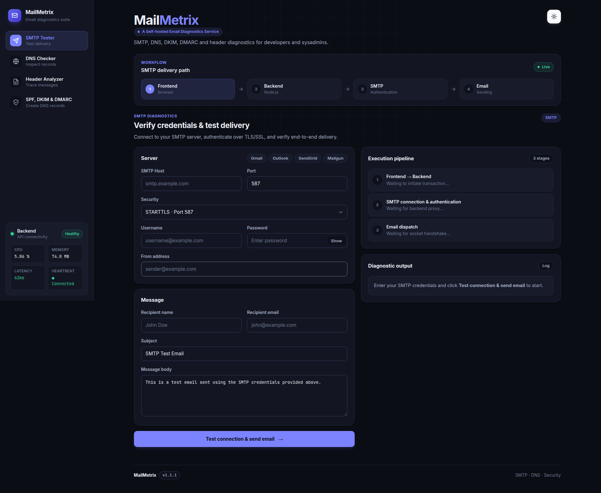
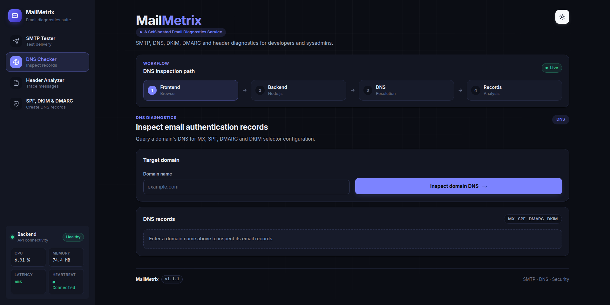
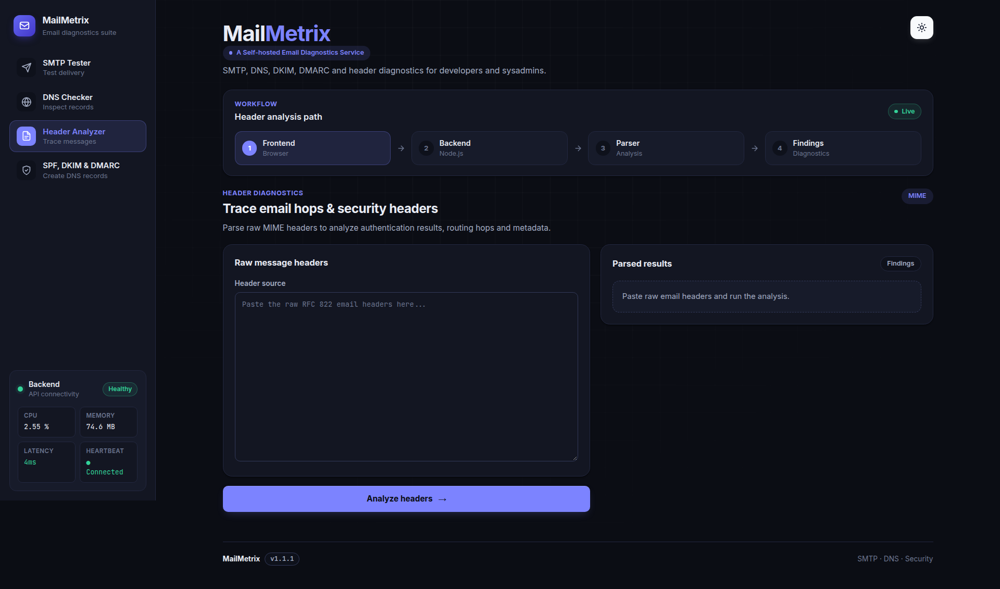
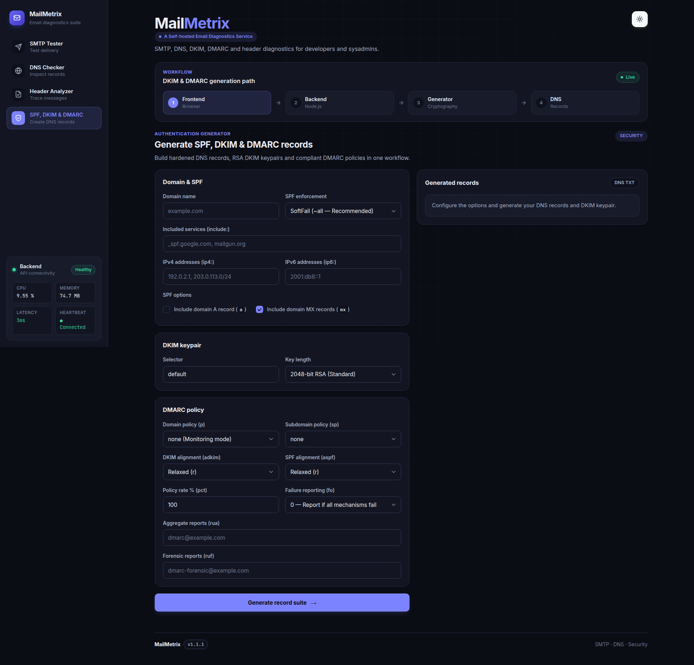

Self-hosted by design
Build and run the application in your own environment using Docker Compose.
Test SMTP connectivity, inspect email authentication records, analyze message headers, and generate DKIM/DMARC configuration material with a self-hosted toolkit built for developers and system administrators.
Build locally with Docker Compose. No public demo instance required.
Email troubleshooting can involve SMTP credentials, DNS configuration, and sensitive message headers. MailMetrix provides a self-hosted deployment option so you can run diagnostics in infrastructure you control.
Build and run the application in your own environment using Docker Compose.
Access common SMTP, DNS, header-analysis, and authentication-generation tools in one interface.
Self-hosting can reduce dependence on third-party diagnostic services, but it does not automatically guarantee security. Review the application's security controls and protect access to your deployment.
Explore the tools available in MailMetrix.

Troubleshoot SMTP connectivity and authentication against a specified mail server.

Inspect MX, SPF, DMARC, and DKIM records associated with your domain.

Examine email headers to investigate message routing and authentication information.

Generate email authentication configuration material for review and deployment.
MailMetrix separates the frontend interface from the backend API and builds the application from source.
Nginx · Web interface
Node.js · Diagnostic API
SMTP and DNS operations may communicate with external servers or resolvers. Review the source code to understand the connections made by each feature.
Start with the public source repository and build the application on your own machine.
Open http://localhost:50000 after the containers start. Review the README and environment configuration before deployment.
Keep control of your deployment by protecting credentials, limiting access, and understanding how diagnostic requests are processed.
Never commit secrets. Avoid production credentials during testing, and review application logging.
Do not expose an unauthenticated instance to untrusted networks. Use appropriate access controls for remote access.
MailMetrix is maintained in a public repository. Explore the implementation, report bugs, and contribute improvements through pull requests.